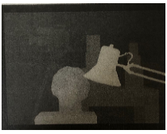
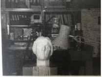

TeXとは・安藤研フォーマットメモ
TeX（テフ）は、数式を含む文書を美しく組版するためのシステムです。安藤研では報告書・卒論・アブストラクトをTeXで作成します。
TeXのディストリビューションとしてTeX Liveを使います。
Ubuntu / WSL:
sudo apt install texlive-fulltexlive-full は容量が大きい（数GB）ですが、パッケージ不足で悩まなくて済むのでおすすめです。
platex --version
dvipdfmx --version安藤研では platex（日本語対応）→ dvipdfmx（PDF変換）の流れでコンパイルします。
ptex2pdf を使えば、platex → dvipdfmx を1コマンドでPDFまで生成できます。
ptex2pdf -l report.tex-l オプションは platex を使う指定です。これだけで report.pdf が生成されます。
相互参照（\ref や \cite）がある場合は2回実行すると正しく解決されます。
ptex2pdf -l report.tex
ptex2pdf -l report.texptex2pdf が内部でやっていることを手動で行う方法です。エラーの原因を特定したいときに便利です。
# 1. platex でコンパイル（.dvi を生成）
platex report.tex
# 2. DVI を PDF に変換
dvipdfmx report.dvi| 方法 | コマンド | 特徴 |
|---|---|---|
| ptex2pdf | ptex2pdf -l file.tex |
platex + dvipdfmx を一括実行。安藤研の標準 |
| platex + dvipdfmx | platex file.texdvipdfmx file.dvi |
手動2ステップ。デバッグ時に有用 |
| latexmk | latexmk -pdfdvi file.tex |
依存関係を自動解析し必要な回数だけコンパイル。参照も自動解決 |
| lualatex | lualatex file.tex |
直接PDF生成。Unicode対応が強い。安藤研では使わない |
| pdflatex | pdflatex file.tex |
直接PDF生成。英語論文で主流。日本語非対応 |
\documentclass[a4paper,11pt]{jsarticle}
% パッケージの読み込み
\usepackage[dvipdfmx]{graphicx} % 画像挿入
\usepackage{amsmath,amssymb} % 数式
\usepackage{url} % URL表示
\title{報告書タイトル}
\author{菅沼}
\date{2026年3月20日}
\begin{document}
\maketitle
\section{はじめに}
ここに本文を書く.
\section{準備}
定義や定理をまとめる.
% 数式の例
\begin{equation}
f(x) = \sum_{i=1}^{n} w_i |x_i - y_i|^2
\end{equation}
% 図の挿入
\begin{figure}[htbp]
\centering
\includegraphics[width=0.7\linewidth]{figs/example.eps}
\caption{グラフ $G$ の構造.}
\label{fig:example}
\end{figure}
図\ref{fig:example}に示す通り...
% 参考文献
\begin{thebibliography}{00}
\bibitem{pardalos1999}
P.M. Pardalos and G. Xue: Algorithms for a class of isotonic
regression problems. \textit{Algorithmica} \textbf{23} (1999) 211--222.
\bibitem{semple2003}
C. Semple and M. Steel: \textit{Phylogenetics}
(Oxford University Press, 2003).
\end{thebibliography}
\end{document}並び順のルール：参考文献は筆頭著者の family name の辞書順（アルファベット順）で並べます。筆頭著者が同じ場合は2人目の family name で，それも同じ場合は出版年の順で並べます。
| コマンド | 説明 | 出力例 |
|---|---|---|
\section{} | 節 | 1. はじめに |
\subsection{} | 小節 | 1.1 背景 |
\textbf{} | 太字 | 太字 |
\textit{} | 斜体 | 斜体 |
$...$ | インライン数式 | x = 1 |
\begin{equation} | 別行立て数式 | （番号付き） |
\ref{} | 参照 | 図1, 式(2) |
\cite{} | 文献引用 | [1] |
\bibitem{} | 参考文献の定義 | （thebibliography内） |
\label{} | ラベル付け | （参照用） |
安藤研独自のルールをまとめたファイルです。
安藤研でよく使うTeX記法を一通り練習するためのテンプレートです。数式・図・アルゴリズム・表の4テーマで、それぞれ正解PDFを再現する形式で練習します。
practice_tex.zip — practice.tex（問題ファイル）と参照用PDFが入っています。
展開したら practice.tex を編集してコンパイルし、各セクションの空欄部分を埋めていきます。
\begin{document} より前の部分です。練習ファイルでは以下が設定済みです。
\documentclass[11pt]{jarticle}jarticle は日本語対応クラスです。安藤研では基本的にこれを使います。
| パッケージ | 用途 |
|---|---|
amsmath, amssymb | 数式・数学記号の拡張（必須） |
amsthm | 定理・補題などの \newtheorem 環境 |
algorithm2e | アルゴリズムの疑似コード（演習3で使用） |
graphicx | 画像の挿入（演習2で使用） |
float | 図・表を [H] でその場に固定 |
subcaption | 図を横並びにするサブ図（演習2で使用） |
lscape | 特定ページを横向きにする |
ascmac | 囲み枠（screen環境など） |
よく使う数学記号に短縮名を付けます。本文で $\real$ と書くだけでℝが出ます。
\newcommand{\real}{{\mathbb R}} % 実数 ℝ
\newcommand{\zahl}{{\mathbb Z}} % 整数 ℤ
\newcommand{\rati}{{\mathbb Q}} % 有理数 ℚ
\newcommand{\comp}{{\mathbb C}} % 複素数 ℂ
\newcommand{\napier}{{\rm e}} % 自然対数の底 e定理・補題などはプリアンブルで定義してから使います。
\newtheorem{theorem}{定理}[section] % 節番号と連動
\newtheorem{lemma}[theorem]{補題} % theorem と通し番号を共有
\newtheorem{corollary}[theorem]{系}
\newtheorem{proposition}[theorem]{命題}
\newtheorem{defe}[theorem]{定義}
\newtheorem{example}{例題}[section]
\newtheorem{claim}[theorem]{主張}[section] は「節番号.定理番号」形式（例: 補題 1.1）になる指定です。
[theorem] は theorem と番号を共有する指定です（補題と定理が混在しても通し番号になる）。
\renewcommand\proofname{\bf 証明}amsthm の proof 環境は初期状態では "Proof." と表示されます。上記で「証明.」に変更しています。
正解PDF（pdf/sample0.pdf）の Section 1「数式」を再現します。補題・証明・複数行の整列数式が含まれます。
正解PDF:
本文中に「補題 1.1.」のような番号付き補題を出すには lemma 環境を使います。
\begin{lemma} \label{lem:cost}
{\rm
木 $T$ の任意の内部点 $u$ を選ぶ．$T[u]$ を...
}
\end{lemma}{\rm ...} で囲むのは必須ではありませんが、定理環境内のテキストはデフォルトでイタリック体になるため、日本語混じりの文章では可読性が落ちます。{\rm} でローマン体にするのが安藤研の慣習です。
1行の独立した数式を番号付きで書くには equation 環境を使います。
\begin{equation} \label{equ:cost}
\mathrm{cost}(T') = \mathrm{cost}(T) - \mathrm{cost}(T[u]) + \mathrm{cost}(T'_u),
\end{equation}| コマンド | 意味 |
|---|---|
\mathrm{cost} | 関数名などをローマン体で表示（イタリックにしない） |
T'_u | プライム付き添字。' はプライム、_u は下付き |
\label{equ:cost} | 後で \eqref{equ:cost} で参照するためのラベル |
番号が不要な場合は equation* を使います。
d_{T'}(i,j) = |\mathrm{leaves}(T'[i \vee j])| - 1|...| で絶対値（縦棒）を書けますが、大きな数式には \left|...\right| を使うと自動的にサイズが合います。
証明は proof 環境で書きます。\end{proof} で自動的に □ が付きます。
\begin{proof}
費用関数は
\begin{equation} \label{equ:cost2}
\mathrm{cost}(T) = \sum_{\{i,j\}\in E} w_{ij} d_T(i,j) + \mathrm{constant}.
\end{equation}
である．...
\end{proof}| コマンド | 意味 |
|---|---|
\sum_{\{i,j\}\in E} | 総和記号。添字が {} を含むので \{ でエスケープ |
w_{ij} | 2文字以上の下付きは {} で囲む |
d_T(i,j) | 下付きが1文字なら {} 不要 |
複数行にわたる変形や計算を縦に揃えるには align 環境を使います。
\begin{align}
\mathrm{constant}
&= \mathrm{cost}(T) - \sum_{\{i,j\}\in E} w_{ij} d_T(i,j) \notag \\
&= \mathrm{cost}(T) - \sum_{\{i,j\}\in E} w_{ij}(|\mathrm{leaves}(T[i\vee j])|-1) \notag \\
&= \sum_{\{i,j\}\in E} w_{ij} \label{equ:const}
\end{align}| コマンド | 意味 |
|---|---|
&= | = の位置で縦に揃える（揃えたい場所に & を置く） |
\\ | 改行。最後の行には不要 |
\notag | その行の数式番号を省略。番号を付けたい行だけ \label{} を書く |
数式の参照は \eqref{} を使います（\ref{} では括弧が付かない）。
式~\eqref{equ:const}より，...正解PDF（pdf/sample0.pdf）の Section 2「図の挿入」を再現します。sample1.png と sample2.png の2枚を横並びに配置します。
使用する画像:


\begin{figure}[htbp]
\centering
\includegraphics[width=0.6\linewidth]{sample1.png}
\caption{キャプション文．}
\label{fig:sample1}
\end{figure}| コマンド・オプション | 意味 |
|---|---|
[htbp] | 配置優先順位: here / top / bottom / page。[H] で強制配置（float パッケージ必要） |
\centering | 図を中央揃えにする |
width=0.6\linewidth | 本文幅の60%にリサイズ。\linewidth は現在の行幅 |
\caption{} | 図のキャプション（図では 下 に書く） |
\label{} | \caption の後に書かないと番号がずれる |
subcaption パッケージの subfigure 環境を使います。
\begin{figure}[htbp]
\centering
\begin{subfigure}[b]{0.45\linewidth}
\centering
\includegraphics[width=\linewidth]{sample1.png}
\caption{sample1のキャプション．}
\label{fig:sub1}
\end{subfigure}
\hfill
\begin{subfigure}[b]{0.45\linewidth}
\centering
\includegraphics[width=\linewidth]{sample2.png}
\caption{sample2のキャプション．}
\label{fig:sub2}
\end{subfigure}
\caption{全体のキャプション．}
\label{fig:both}
\end{figure}| コマンド | 意味 |
|---|---|
subfigure[b]{0.45\linewidth} | 幅 45% のサブ図ボックス。[b] は下端揃え |
\hfill | 2枚の間を均等に広げる水平スペース |
width=\linewidth | subfigure ボックス内での幅（親ボックスの幅いっぱい） |
サブ図は \subref{fig:sub1} で「(a)」のように参照できます。
2枚の幅の合計が 1.0 を超えると改行されるので、合計が 0.9〜0.95 程度になるように調整します。
正解PDF（pdf/alg.pdf）を再現します。algorithm2e パッケージを使います。
正解PDF:
\usepackage[lined,linesnumbered,boxed]{algorithm2e}| オプション | 意味 |
|---|---|
lined | ブロックの左側に縦線を引く |
linesnumbered | 各行に行番号を付ける |
boxed | アルゴリズム全体を枠で囲む |
また、日本語表示のためにプリアンブルで以下を設定します。
\SetAlgorithmName{アルゴリズム}{アルゴリズム}{アルゴリズムのリスト}
\SetKwInput{KwIn}{入力}
\SetKwInput{KwOut}{出力}
\SetKwRepeat{Do}{do}{while} % do-while ループ用\IncMargin{0.5em}
\begin{algorithm}
\caption{局所探索アルゴリズム．}
\label{alg:local}
\KwIn{$X$ 上の相違行列 $M$, 自然数 $k \geq 1$.}
\KwOut{$k$SS 近傍に関して局所最適な $X$ 上の 2 分木 $T$.}
初期の $X$ 上の 2 分木 $T = (V, E)$ を構成;\\
...
\end{algorithm}
\DecMargin{0.5em}\IncMargin / DecMargin はアルゴリズムの左余白の調整です。\IncMargin{0.5em} で開始し、\DecMargin{0.5em} で元に戻します。
\Do{$\mathrm{swap} \neq 0$}{
$\mathrm{swap} \leftarrow 0$;\\
$T'$ を $T$ の $k$SS 近傍の中で $f(T')$ を最大化する 2 分木とする;\\
\If{$f(T') > f(T)$}{
$T \leftarrow T'$;\\
$\mathrm{swap} \leftarrow 1$;\\
$|L(T_v)|$ $(v \in V)$ を更新する;\\
$W$ を更新する;\\
}
}| コマンド | 意味 |
|---|---|
\Do{条件}{本文} | do-while ループ。\SetKwRepeat{Do}{do}{while} で定義 |
\If{条件}{本文} | if 文。then / end は自動挿入 |
\leftarrow | ← （代入を表す矢印） |
\neq | ≠ |
\\ | アルゴリズム内の改行。各ステップの末尾に付ける |
アルゴリズム内のテキストはデフォルトで数式モード外です。変数名を斜体にしたい場合は $T$ のように $...$ で囲みます。
正解PDF（pdf/table.pdf）を再現します。二重縦線・床関数・天井関数を含む複雑な表です。
正解PDF:
表のキャプションは 上 に書きます（図と逆）。
\begin{table}[H]
\caption{表のキャプション．}
\label{tab:result}
\begin{tabular}{r||cccccc}
\hline
列1 & 列2 & 列3 & 列4 & 列5 & 列6 & 列7 \\ \hline
値 & 値 & 値 & 値 & 値 & 値 & 値 \\
\hline
\end{tabular}
\centering
\end{table}| 列指定 | 意味 |
|---|---|
r / c / l | 右 / 中央 / 左揃え |
| | 縦線1本 |
|| | 縦線2本（二重線） |
\hline | 横線。表の上下と見出し行の後に書く |
& | 列区切り |
\\ | 行末 |
正解の表のヘッダーには ⌊t/2⌋（床関数）や ⌈t/4⌉（天井関数）が含まれます。
| コマンド | 出力 | 意味 |
|---|---|---|
\lfloor x \rfloor | ⌊x⌋ | 床関数（切り捨て） |
\lceil x \rceil | ⌈x⌉ | 天井関数（切り上げ） |
ネストした場合の例：
% ⌊⌊t/2⌋/2⌋
$\lfloor \lfloor t/2 \rfloor /2 \rfloor$
% ⌊⌈t/4⌉/2⌋
$\lfloor \lceil t/4 \rceil /2 \rfloor$括弧を式の高さに合わせて自動調整したい場合は \left\lfloor ... \right\rfloor を使います。ただし表のヘッダーのような小さい文字では \left/\right なしで十分です。
正解PDFの表は「1列目が右揃え・二重縦線・残り6列が中央揃え」の構成です。
\begin{tabular}{r||cccccc}ヘッダー行の書き方（床関数・天井関数を含む）：
$r$ & $\lfloor t/2 \rfloor$ & $\lfloor t/4 \rfloor$
& $\lfloor \lfloor t/2 \rfloor /2 \rfloor$
& $\lfloor \lceil t/4 \rceil /2 \rfloor$
& $\lceil \lfloor t/2 \rfloor /2 \rceil$
& $\lceil \lceil t/4 \rceil /2 \rceil$ \\ \hline